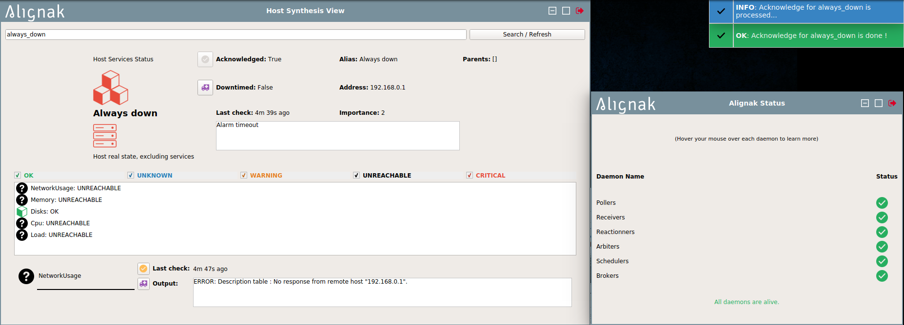

# Alignak monitoring
# integrated monitoring solution
## Introduction
Alignak is a complete monitoring solution.
It will help you to easily implement the monitoring of your resources (servers, applications, network devices...).
Reporting is an important part of the solution and we especially worked on it to offer powerful views on webui.
### Global schema

### Alignak: the monitoring framework (1/2)

### Alignak-backend: configuration & reporting

### Alignak-backend: how-to configuration 2/2

### How-to resources checks

### Where checks results go

## WebUI - graphs (2/2)

## Alignak-app - notification
(under Ubuntu)

Alignak-app - synthesis view
(under Ubuntu)

## Load-balancing usage

## Fail-over usage